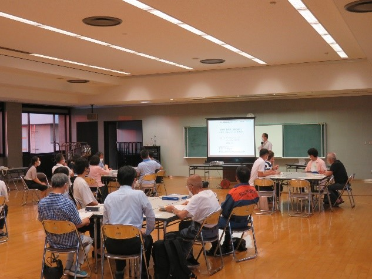
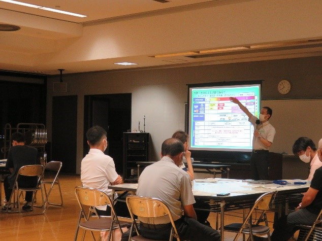
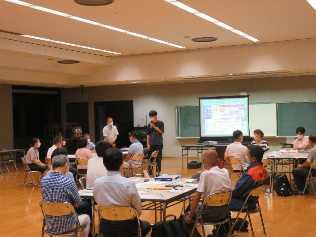
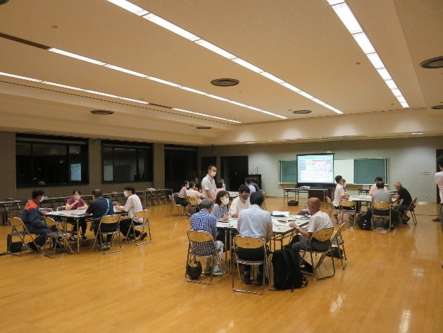

mizukan
イベント
第3回「三津浜・宮前地区」避難行動ワークショップ
2022年7月28日、松山市西消防署にて行われた、第3回
「三津浜・宮前地区」避難行動ワークショップに参加してきました.


過去２回行われている当避難行動ワークショップに、愛媛大学水工学研究室はこれまでも
参加してきましたが、第3回となる今回は最終回ということで、過去2回のワークショップの
内容の振り返りや、住民の危機意識を向上させるための有効なツール(VR、要支援者を考慮した
シミュレーション、3D都市モデル、コミュニティタイムライン等)の検証などが行われました．

水工学研究室からは４人が参加し、主にコミュニティ
タイムライン作成時のファシリテーターを行いました.

当ワークショップを通して、実際に住民の方々の
意見を聞くことができ、非常に勉強になりました.
文責 菊池